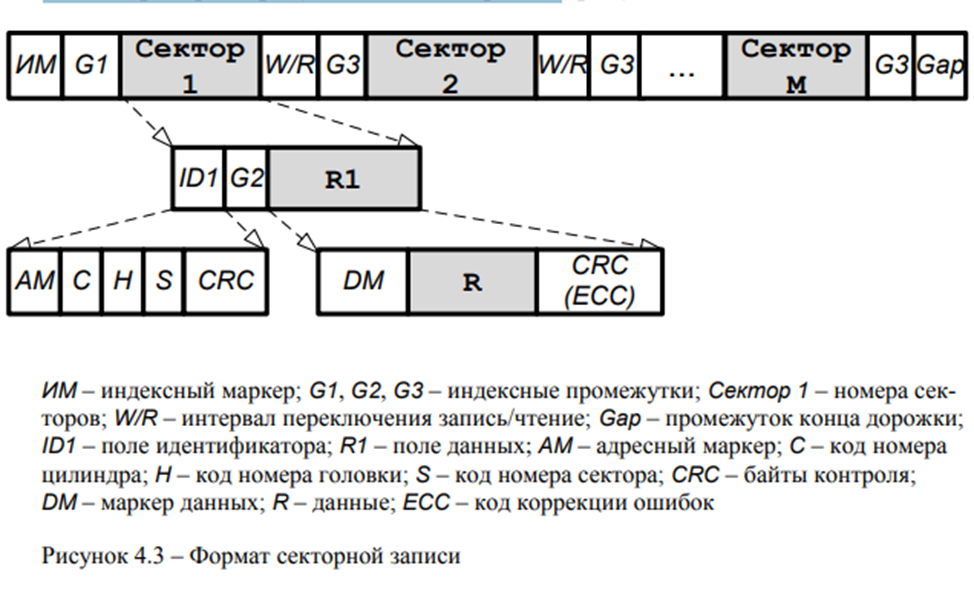

Организация данных на дисковых магнитных носителях.
Для записи, хранения и однозначного считывания данных их необходимо организовать. Секторная запись является широко применяемой организацией данных на дисковых магнитных носителях. При ней вводятся понятия дорожка цилиндр, сектор.
Дорожка (Track = 00, начало нумерации – с внешней стороны) – последовательность магнитных отпечатков, созданных на поверхности вращающегося диска при неизменном положении магнитной головки (рисунок 4.2).
Цилиндр (Cylinder = 00, начало нумерации – с внешней стороны) – совокупность дорожек одного радиуса на различных поверхностях пакета дисков (также, совокупность всех треков с одинаковыми номерами). Цилиндры (как и дорожки) нумеруют последовательно, начиная с наружного.
Секторная запись
Секторная запись – дорожки делятся на определенное число секторов (Sector) фиксированного размера (по ѐмкости). Сектор является минимальным блоком данных, который может быть записан на диск или считан с него.
Секторы располагаются вдоль дорожки, и они нумеруются таким способом, чтобы номер каждого сектора состоял из трех частей CHS:
- номера (или адреса) цилиндра С,
- номера поверхности или головки Н (Head)
- порядкового номера сектора на дорожке S.
Совокупность номеров СН образует номер дорожки.
Структура дорожки и сектора.
Перед использованием магнитного носителя (диска, ленты) он должен быть размечен. Процедура разметки (форматирования) заключается в том, что в определенные места каждой дорожки записываются служебные последовательности символов, называемые форматом.
Рассмотрим развертку кольцевой дорожки.
Начало каждой дорожки помечается индексным маркером (ИМ), отделяемым от первого сектора индексным промежутком (G1). Он нужен для того, чтобы при перемещении головки на новую дорожку переходные процессы (установка) закончились до того, как она окажется перед ее первым сектором.
Расположение секторов нумеруется последовательно от 1 до М, начиная с индексного маркера. Каждый сектор состоит из двух полей – поля идентификатора (заголовка) ID и поля данных R. При обращении к сектору по чтению или записи идентификатор только считывается.
Поле идентификатора ID содержит:
– адресный маркер (метку) (AM), отмечающий начальную цифровую позицию – специальный код, отличающийся от данных; он указывает начало сектора и служебных данных (применяются определенным образом выбранные битовые комбинации тактовых импульсов, которые не появляются в режиме записи данных и позволяют легко отличать эту метку);
– номер (адрес) цилиндра (С), содержащий код порядкового номера (адрес) цилиндра, на котором расположен сектор;
– номер головки (H) – код, который указывает порядковый номер головки;
• номер сектора (S) – код, определяющий номер сектора; Нумерация секторов, которая задается контроллеру при форматировании, может быть достаточно произвольной – важно лишь, чтобы все секторы трека имели уникальные номера в пределах допустимого диапазона.
• байты контроля (CRC). При низкоуровневом форматировании в процессе формирования поля идентификатора накапливаются и записываются в конце поля байты контрольной суммы, называемой кодом циклического контроля (CRC – Cyclic Redundancy Check). В дальнейшем при операциях доступа к сектору на внутренних регистрах контроллера происходит накопление контрольной суммы по этому же алгоритму, а затем записанная и накопленная контрольные суммы сравниваются.
В индексном промежутке (интервал включения записи) G2 записывается служебная последовательность фиксированного числа единиц и нулей, которая позволяет «настроить» схемы воспроизведения на начало тактового интервала записи и тем самым обеспечить правильную синхронизацию при воспроизведении данных. Этот интервал включения записи гарантирует, что данные в следующей области будут записана правильно. Кроме того, он служит для завершения анализа CRC (контрольной суммы) идентификатора сектора.
Поле данных R1 используется для хранения пользовательских данных. Пригодность участков для записи определяется при низкоуровневом форматировании.
– маркер данных (DM) – с него начинается поле данных. Он отмечает первую цифровую позицию поля и позволяет переключить МГ с режима чтения (заголовка) в режим записи (данных).
– байты контроля (CRC или ECC). Все операции записи данных сопровождаются накоплением и записью в конце поля данных байтов контрольной суммы. Контрольная сумма, называемая кодом циклического контроля (CRC – Cyclic Redundancy Check), применяется в накопителях со сменными носителями.
При операциях чтения и проверки данных на внутренних регистрах контроллера происходит накопление контрольной суммы по этому же алгоритму, а затем записанная и накопленная контрольные суммы сравниваются. При их совпадении прочитанные или проверенные данные считаются достоверными, при несовпадении – вырабатывается сигнал сбоя данных.
Код коррекции ошибок ECC (Error Correction Code) позволяет не только обнаружить ошибку, но и исправить еѐ в одном или даже нескольких разрядах. Подсчитывается с помощью соответствующего полинома, разрядность которого определяет возможности ECC. Эффективность этой операции зависит от выбранного метода коррекции и особенностей контроллера. Избыточные коды Рида-Соломона позволяют исправлять большинство ошибок на лету, без повторного считывания. Применяется в накопителях с более сложным контроллером (НЖМД, НМОД, НМЛ и т.д.).
• межсекторные промежутки (G3) – отделяют секторы друг от друга. В них также записывается служебная последовательность единиц и нулей, поддерживающая синхронизацию схем воспроизведения. В межсекторных промежутках могут размещаться и сервокоды (с.Ошибка! Закладка не определена.).
Таким образом, можно выделить минусы секторного форматирования.
Во-первых, ID-поля «съедают» как минимум 15% форматированной емкости диска.
Во-вторых, ID-поля «не дают» увеличить плотность треков, а вместе с ней и общую емкость диска.
В-третьих, поиск сектора данных на треке происходит методом последовательного перебора всех «встречающихся» ID-полей этого трека, что неэффективно с точки зрения временных затрат дисковой подсистемы.
Технология No-ID Sector format.
Технология No-ID Sector Format, разработанная IBM, позволяет избавиться от этих недостатков. Идея данной технологии проста: использовать для хранения служебной информации о структуре форматированного носителя не дисковую, а электронную память, для чего применяются твердотельные RAM-модули (solid state RAM memory).
Последствия такого подхода весьма результативны: на диске освобождается место, использовавшееся ранее под ID- и серво-поля; исчезает ограничение на плотность треков; сокращается время поиска секторов с данными, поскольку все необходимые для этого данные хранятся теперь в RAM-памяти. При этом само понятие ID-поля исчезает, а процесс форматирования (естественно, низкоуровневого) становится немного «фиктивным» – все данные о разметке диска сохраняются в RAM-памяти, а не на его поверхности.
В целом же применение технологии No-ID Sector Format в сочетании с последними моделями MR- и GMR-головок позволяет увеличить общий полезный объем диска на 30% (!) по сравнению с традиционной технологией форматирования.